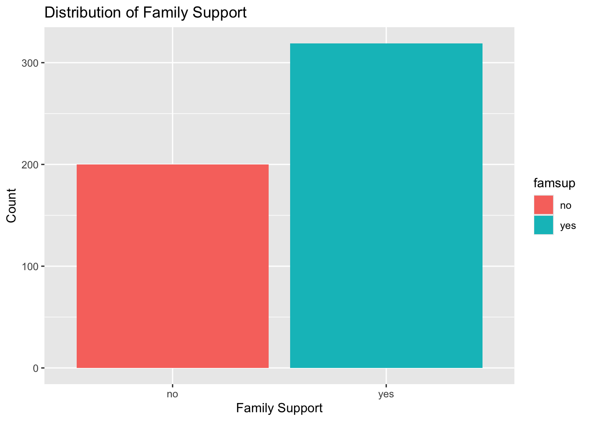
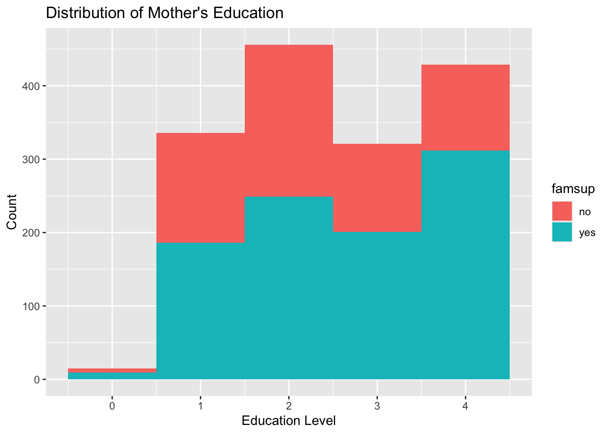
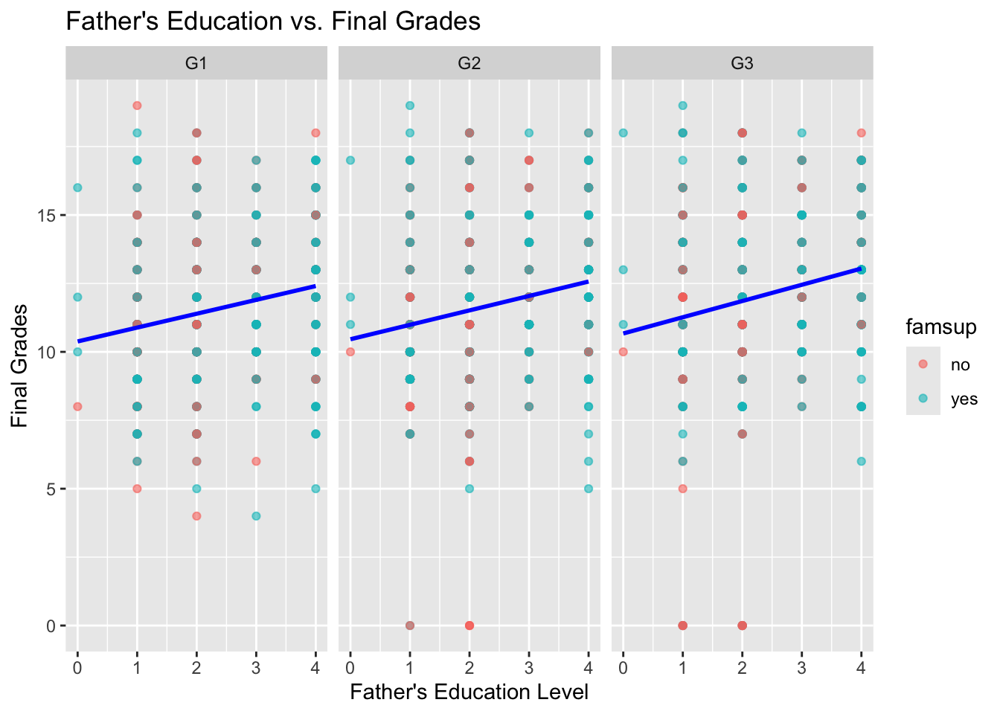
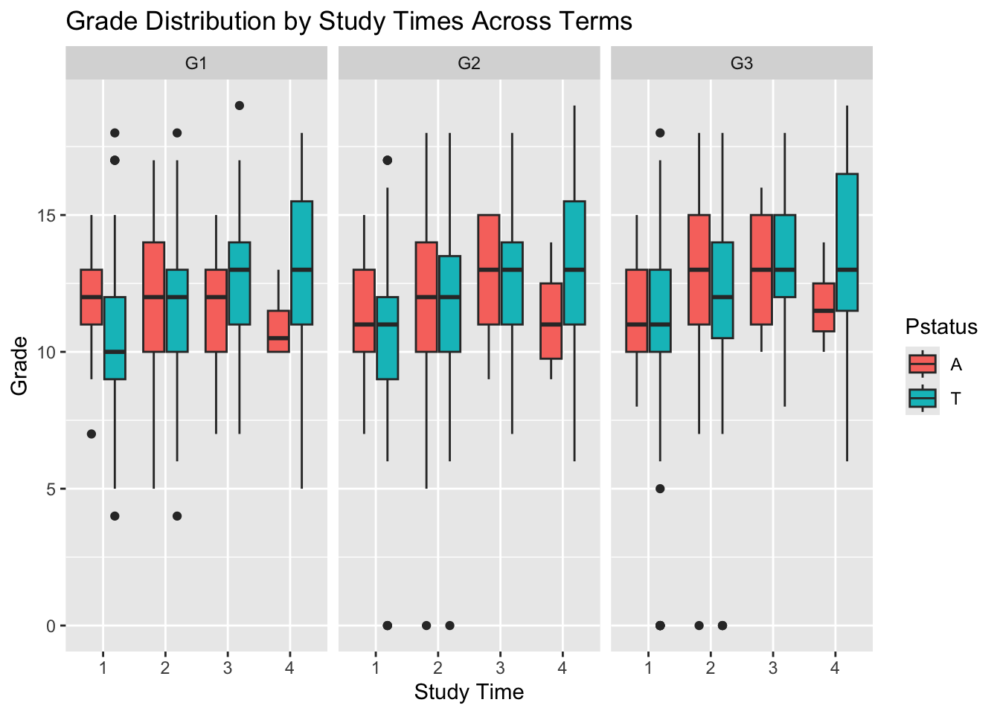

here::i_am("437proj.qmd")Statistical Learning Project
Motivation and Context
For my project I wanted to explore if different kinds of environments/backgrounds that children have has an effect on how well a student performs in school. This is something I think is worth researching not just because I believe education is important but because it is a little personal. I find this topic interesting because I love learning but I didn’t always love learning in school when I was younger. If you had asked elementary me if I liked school I would’ve said no but I love school now don’t want to stop learning and I would like to for more people to be motivated to learn.
I feel that I did not have the best relationship with school and it was for a reason. I believe that by studying the factors that influence student performance, we can gain insights into why some students excel while others struggle, ultimately helping to improve the education system. One question that has always lingered in my mind, but that I’ve never formally researched, is how a person’s upbringing affects their perspective on and performance in education. I think about this quite often because I worked at a school as a math tutor with elementary and middle school students, particularly with the students who were struggling academically, had behavioral challenges, or lacked motivation. Many of these students would only engage in learning when they were pulled out of the classroom for one-on-one instruction. And from this experience I was learning that a student’s academic struggles often have deeper roots, some had difficult home lives, some simply needed individual attention, some had parents who worked long hours and couldn’t help with homework, some had parents who weren’t able to help from a lack of completing school themselves, and, unfortunately, some had parents who didn’t prioritize education, which in turn influenced the student’s attitude toward school.
This issue is not just something I observed in others but it also something I can relate to from my own experiences. Coming from a family with parents who are not educated, I had a difficult time in elementary school and often felt disengaged. Even now, as a first-generation college student, I have, at times, felt discouraged, incapable, embarrassed, or unqualified, a lot of the reasons for these feelings are because of my background as a first-gen, female, minority student. But my personal experience in school growing up has instilled my current perspective and motivated me on being educated. I used to despise school in elementary, but I am now grateful to have an opportunity to go to college and become educated. Beyond my personal connection, I believe many others would find this topic relevant because education shapes the future. Understanding the factors behind academic success or failure, especially across different demographics, can help educators, policymakers, and communities better support students and create a more equitable learning environment. The younger generations are our future.
Main Objective
The goal of this project is to investigate the key factors that influence student academic performance. Specifically, I am interested in exploring how a student’s demographics, parental education, study habits, and family support and environment contribute to their success or struggles in school. What separates a high-performing student from one who is underperforming? By analyzing these variables, I aim to identify meaningful patterns and relationships that can inform how we better support students in diverse educational settings.
\(\textbf{In short:}\) What are the key determinants of student performance in school?
Packages Used In This Analysis
library(here)
library(readr)
library(dplyr)
library(ggplot2)
library(rsample)
library(tidymodels)
library(tidyverse)
library(recipes) # don't need the rest of tidymodels
library(naniar)
library(softImpute)
library(broom)
library(mice)| Package | Use |
|---|---|
| here | to easily load and save data |
| readr | to import the CSV file data |
| dplyr | to massage and summarize data |
| rsample | to split data into training and test sets |
| ggplot2 | to create nice-looking and informative graphs |
| tidymodels | for modeling |
| tidyverse | for creating and using models of all types |
| tibble | |
| naniar | |
| softImpute | |
| mice |
Data Description
The dataset used in this project is the Portuguese Student Performance Data Set, available through education datasets on Kaggle Student Performance Data Set and sourced from two secondary schools in Portugal. The data was collected by researchers in 2005 and 2006 through surveys to analyze factors that influence student achievement, study patterns in student success, and explore the impact of socioeconomic and on learning outcomes in math and Portuguese language courses. It includes data on 649 students and captures a wide range of features such as demographics (age, sex, and address), family background (parental education and job), school support (extra tutoring, access to internet, travel time), personal habits (study time, free time, alcohol consumption), and academic performance across three grading periods: G1 (first trimester), G2 (second trimester), and G3 (final grade). This dataset provides a good foundation for analyzing how various personal and environmental factors influence academic outcomes.
To understand my analysis, it’s also important to have some background knowledge about education systems, student performance metrics, and social factors that influence learning. In Portugal, and for this data in particular the target attribute G3 has a strong correlation with attributes G2 and G1. This occurs because G3 is the final year grade (issued at the 3rd trimester), while G1 and G2 correspond to the 1st and 2nd trimester grades. It is more difficult to predict G3 without G1 and G2. Grades are typically on a 0–20 scale, with 10 as the minimum passing mark. Compared to here in the U.S. high school years are generally sectioned into semesters and students receive letter grades A, B, C, D, or F.
Throughout this process I will refer to student performance, which describes how well a student meets academic benchmarks measured through their G3 grades.
Socioeconomic background refers to an individual’s or family’s economic and social position relative to others, based on factors like income, education level, and occupation. Socioeconomic factors and parental education levels may have different impacts due to cultural and systemic differences.
data <- readr::read_csv(here::here("student-por.csv"))
data# A tibble: 649 × 33
school sex age address famsize Pstatus Medu Fedu Mjob Fjob reason
<chr> <chr> <dbl> <chr> <chr> <chr> <dbl> <dbl> <chr> <chr> <chr>
1 GP F 18 U GT3 A 4 4 at_home teach… course
2 GP F 17 U GT3 T 1 1 at_home other course
3 GP F 15 U LE3 T 1 1 at_home other other
4 GP F 15 U GT3 T 4 2 health servi… home
5 GP F 16 U GT3 T 3 3 other other home
6 GP M 16 U LE3 T 4 3 services other reput…
7 GP M 16 U LE3 T 2 2 other other home
8 GP F 17 U GT3 A 4 4 other teach… home
9 GP M 15 U LE3 A 3 2 services other home
10 GP M 15 U GT3 T 3 4 other other home
# ℹ 639 more rows
# ℹ 22 more variables: guardian <chr>, traveltime <dbl>, studytime <dbl>,
# failures <dbl>, schoolsup <chr>, famsup <chr>, paid <chr>,
# activities <chr>, nursery <chr>, higher <chr>, internet <chr>,
# romantic <chr>, famrel <dbl>, freetime <dbl>, goout <dbl>, Dalc <dbl>,
# Walc <dbl>, health <dbl>, absences <dbl>, G1 <dbl>, G2 <dbl>, G3 <dbl>\(\textbf{The data includes:}\)
Two public schools in Portugal: Gabriel Pereira \(\textbf{(GP)}\) and Mouzinho da Silveira \(\textbf{(MS)}\)
\(\textbf{school:}\) student’s school (binary:
GP= Gabriel Pereira orMS= Mousinho da Silveira)\(\textbf{sex:}\) student’s sex (binary:
F= female orM= male)\(\textbf{age:}\) student’s age (numeric: from 15 to 22)
\(\textbf{address:}\) student’s home address type (binary:
U= urban orR= rural)\(\textbf{famsize:}\) family size (binary:
LE3= less than or equal 3 orGT3= greater than 3)\(\textbf{Pstatus:}\) parent’s cohabitation status (binary:
T= living together orA= apart)\(\textbf{Medu:}\) mother’s education (numeric:
0= none,1= primary education (4th grade),2= 5th to 9th grade3= secondary education or4= higher education)\(\textbf{Fedu:}\) father’s education (numeric:
0= none,1= primary education (4th grade),2= 5th to 9th grade3= secondary education or4= higher education))\(\textbf{Mjob:}\) mother’s job (nominal:
teacher,health care related,civil services(administrative or police),at_homeorother)\(\textbf{Fjob:}\) father’s job (nominal:
teacher,health care related,civil services(administrative or police),at_homeorother)\(\textbf{reason:}\) reason to choose this school (nominal: close to
home,school reputation,course preferenceorother)\(\textbf{guardian:}\) student’s guardian (nominal:
mother,fatherorother)\(\textbf{traveltime:}\) home to school travel time (numeric:
1= less than 15 min.,2= 15 to 30 min.,3= 30 min. to 1 hour, or4= more than 1 hour)\(\textbf{studytime:}\) weekly study time (numeric:
1= less than 2 hours,2= 2-5 hours,3= 5-10 hours, or4= more than 10 hours)\(\textbf{failures:}\) number of past class failures (numeric: n if 1<=n<3, else
4)\(\textbf{schoolsup:}\) extra educational support (binary:
yesorno)\(\textbf{famsup:}\) family educational support (binary:
yesorno)\(\textbf{paid:}\) extra paid classes within the course subject (Math or Portuguese) (binary:
yesorno)\(\textbf{activities:}\) extra-curricular activities (binary:
yesorno)\(\textbf{nursery:}\) attended nursery school (binary:
yesorno)\(\textbf{higher:}\) wants to take higher education (binary:
yesorno)\(\textbf{internet:}\) Internet access at home (binary:
yesorno)\(\textbf{romantic:}\) with a romantic relationship (binary:
yesorno)\(\textbf{famrel:}\) quality of family relationships (numeric: from
1- very bad to5- excellent)\(\textbf{freetime:}\) free time after school (numeric: from
1- very low to5- very high)\(\textbf{goout:}\) going out with friends (numeric: from
1- very low to5- very high)\(\textbf{Dalc:}\) workday alcohol consumption (numeric: from
1- very low to5- very high)\(\textbf{Walc:}\) weekend alcohol consumption (numeric: from
1- very low to5- very high)\(\textbf{health:}\) current health status (numeric: from
1- very bad to5- very good)\(\textbf{absences:}\) number of school absences (numeric: from
0to93)\(\textbf{G1:}\) first period grade (numeric: from
0to20)\(\textbf{G2:}\) second period grade (numeric: from
0to20)\(\textbf{G3:}\) final grade (numeric: from
0to20, output target)
Student performance can be influenced by a variety of factors, in relation to my research question, I consider variables such as study time, parental education, and family support particularly relevant, as they can have a significant impact on a student’s academic success:
\(\textbf{Pstatus:}\) parent’s cohabitation status (binary:
T= living together orA= apart)\(\textbf{Medu:}\) mother’s education (numeric:
0= none,1= primary education (4th grade),2= 5th to 9th grade3= secondary education or4= higher education)\(\textbf{Fedu:}\) father’s education (numeric:
0= none,1= primary education (4th grade),2= 5th to 9th grade3= secondary education or4= higher education)\(\textbf{guardian:}\) student’s guardian (nominal:
mother,fatherorother)\(\textbf{studytime:}\) weekly study time (numeric:
1= less than 2 hours,2= 2-5 hours,3= 5-10 hours, or4= more than 10 hours)\(\textbf{famsup:}\) family educational support (binary:
yesorno)\(\textbf{G1:}\) first period grade (numeric: from
0to20)\(\textbf{G2:}\) second period grade (numeric: from
0to20)
\(\textbf{The main response variable will be:}\)
- \(\textbf{G3:}\) final grade (numeric: from
0to20, output target)
Data Limitations
First, there may be biases in data collection methods. For example, self-reported study habits and parental involvement may not always be accurate because students or parents might overestimate or underestimate their efforts. Additionally, this data was collected from specific schools in a different country, which means the findings might not be generalizable to all student populations around the world or even here in the US.
Second, is the mismatch between dataset variables and real-world educational experiences. For example, final grades may not reflect a student’s true learning abilities or potential, as they can be having a difficult school year or does poorly on exams or doesn’t do work for their grade.
Third, geographic limitations could impact the model’s applicability. This data was collected in one country with one educational system that may not accurately reflect student performance in other areas due to cultural, economic, and policy differences.
Finally, and importantly, there are some ethical limitations to using statistical models to predict or describe student performance. While such models can help identify students in need of support, they also risk reinforcing stereotypes or lowering expectations. For example, if a model predicts that students from working-class or less-educated families are likely to underperform, it could lead to those students being tracked into less rigorous programs or receiving less encouragement.
This means that conclusions from my analysis may not be universally applicable and should be interpreted with these constraints in mind.
Data Wrangling
vis_miss(data[,1:33]) # default row and column order
Since there is no missing data it does not makes sense to remove or impute any missing data.
student <- data |>
select(Pstatus, Fedu, Medu, guardian, studytime, famsup, G1, G2, G3)
student <- student |>
mutate(
Pstatus = as.factor(Pstatus),
guardian = as.factor(guardian),
studytime = as.factor(studytime),
famsup = as.factor(famsup)
)
student# A tibble: 649 × 9
Pstatus Fedu Medu guardian studytime famsup G1 G2 G3
<fct> <dbl> <dbl> <fct> <fct> <fct> <dbl> <dbl> <dbl>
1 A 4 4 mother 2 no 0 11 11
2 T 1 1 father 2 yes 9 11 11
3 T 1 1 mother 2 no 12 13 12
4 T 2 4 mother 3 yes 14 14 14
5 T 3 3 father 2 yes 11 13 13
6 T 3 4 mother 2 yes 12 12 13
7 T 2 2 mother 2 no 13 12 13
8 A 4 4 mother 2 yes 10 13 13
9 A 2 3 mother 2 yes 15 16 17
10 T 4 3 mother 2 yes 12 12 13
# ℹ 639 more rowsset.seed(123)
student_split <- initial_split(student, prop = 0.80) #splitting data (random sample, 80%)
student_train <- training(student_split)
student_test <- testing(student_split)Exploratory Data Analysis
table(student_train$famsup)
no yes
200 319 ggplot(data = student_train,
mapping = aes(
x = famsup,
fill = famsup
)
) +
geom_bar() +
labs(title = "Distribution of Family Support", x = "Family Support", y = "Count") 
I was interested in finding out how many students in this dataset receive support form their family and those who do not. It appears that in this dataset there are 319 students who do receive academic support form their family, more than students who do not, 200. This will help us understand the balance in the dataset and whether family support plays a role in student performance.
Naturally, I thought the next step should be to visualize and compare the tendency and spread of this variable across G1, G2, and G3 to see if family support results in better academic performance.
student_G123 <- student_train |>
pivot_longer(cols = c(G1, G2, G3),
names_to = "Term",
values_to = "Grade")ggplot(student_G123,
mapping = aes(
x = famsup,
y = Grade,
fill = famsup
)
) +
geom_boxplot() +
facet_wrap(~ Term) +
labs(title = "Grade Distribution by Family Support Across Terms",
x = "Family Support",
y = "Grade")means_by_group <- student_G123 |>
group_by(Term, famsup) |>
summarise(mean_grade = mean(Grade, na.rm = TRUE), .groups = "drop")
means_by_group# A tibble: 6 × 3
Term famsup mean_grade
<chr> <fct> <dbl>
1 G1 no 11.4
2 G1 yes 11.6
3 G2 no 11.5
4 G2 yes 11.8
5 G3 no 11.7
6 G3 yes 12.3Based on the boxplots, there does not seem to be a significant difference in academic achievement based on whether or not a student receives academic support from their family. The mean for G1 grades in group no is 11.4 and the mean in group yes is 11.6. The mean is higher for the yes group but this may be due to the fact that there are more students who have family support than those who don’t. The means are fairly close. The mean for G2 grades in group no is 11.5 and the mean in group yes is 11.8. The mean is higher for the yes group. The means for G2 grades are also fairly close. The same can be said about grades for G3 grades. The mean for G3 grades in group no is 11.7 and the mean in group yes is 12.3.
I also created a bar graph for more visual evidence. They seem very similar to each other. Family support may play a role in student performance.
ggplot(data = student_G123,
mapping = aes(
x = Grade,
fill = famsup)
) +
geom_histogram(binwidth = 1) +
facet_grid(
rows = vars(famsup), cols = vars(Term)
)The bar graphs also seem to have similar distributions but we can also see that the yes group for all the grades has a higher count.
Since no strong association was found, I decided to see if parental education was associated with academic success. My initial assumption without exploring the data is that the higher the education that parents received the more likely the student will follow in their footsteps and have better chances of academic success.
student_train |>
group_by(Fedu) |>
summarise(mean_G3 = mean(G3, na.rm = TRUE),
count = n())# A tibble: 5 × 3
Fedu mean_G3 count
<dbl> <dbl> <int>
1 0 13 4
2 1 11.2 136
3 2 11.8 171
4 3 12.7 102
5 4 12.9 106ggplot(data = student_G123,
mapping = aes(
x = Fedu,
fill = famsup
)
) +
geom_histogram(binwidth = 1) +
labs(title = "Distribution of Father's Education", x = "Education Level", y = "Count")student_train |>
group_by(Medu) |>
summarise(mean_G3 = mean(G3, na.rm = TRUE),
count = n())# A tibble: 5 × 3
Medu mean_G3 count
<dbl> <dbl> <int>
1 0 11 5
2 1 11.1 112
3 2 11.7 152
4 3 12.0 107
5 4 13.2 143ggplot(data = student_G123,
mapping = aes(
x = Medu,
fill = famsup)
) +
geom_histogram(binwidth = 1) +
labs(title = "Distribution of Mother's Education", x = "Education Level", y = "Count") 
The mean final grade (G3) for each level of Fedu:
0(no education): average final grade is 131(primary education up to 4th grade): average final grade is 11.22(primary education 5th to 9th grade): average final grade is 11.83(secondary education 10th to 12th): average final grade is 12.74(higher education): average final grade is 12.9
The first summary reveals that final grades tend to increases as the fathers level of education increases.
The mean final grade (G3) for each level of Medu:
0(no education): average final grade is 111(primary education up to 4th grade): average final grade is 11.12(primary education 5th to 9th grade): average final grade is 11.73(secondary education 10th to 12th): average final grade is 124(higher education): average final grade is 13.2
The second summary reveals that final grades also tend to increase as the mothers level of education increases but it is not as high as the average final grades when the father is educated.
There does seem to be a pattern so next I wanted to determine whether students with more educated parents perform better or if one parent in particular that is educated has a greater effect than the other.
ggplot(student_G123,
mapping = aes(
x = Fedu,
y = Grade,
color = famsup
)
) +
geom_point(alpha = 0.6) +
geom_smooth(method = "lm", se = FALSE, color = "blue") +
facet_wrap(~ Term) +
labs(title = "Father's Education vs. Final Grades",
x = "Father's Education Level",
y = "Final Grades")`geom_smooth()` using formula = 'y ~ x'
ggplot(student_G123,
mapping = aes(
x = Medu,
y = Grade,
color = famsup
)
) +
geom_point(alpha = 0.6) +
geom_smooth(method = "lm", se = FALSE, color = "red") +
facet_wrap(~ Term) +
labs(title = "Mother's Education vs. Final Grades",
x = "Mother's Education Level",
y = "Final Grades")`geom_smooth()` using formula = 'y ~ x'The scatter plots help visualize the relationships between each parents educational level and the students academic success. There is a positive relationship between each variable. As the parents educational level increases, for both the mother and father, the student does achieve higher grades. Though it is hard to notice the line for the fathers education is slightly higher in comparison to the mothers education line. So at every level for fathers education the average final grades are higher than it is for mothers at the same levels of education. The fathers education correlates to the students grades and has a greater impact on their grades than the mother being educated.
Another variable that I wanted to take a look at was study time. It would make sense that the more a student studies the higher the grades.
ggplot(data = student_G123,
mapping = aes(
x = studytime,
y = Grade,
fill = Pstatus
)
) +
geom_boxplot() +
facet_wrap(~ Term) +
labs(title = "Grade Distribution by Study Times Across Terms",
x = "Study Time",
y = "Grade")
student_G123 |>
group_by(Pstatus, Term) |>
summarise(
num_total = n(),
min = min(Grade, na.rm = TRUE),
median = median(Grade, na.rm = TRUE),
max = max(Grade, na.rm = TRUE),
mean = mean(Grade, na.rm = TRUE),
sd = sd(Grade, na.rm = TRUE)
)`summarise()` has grouped output by 'Pstatus'. You can override using the
`.groups` argument.# A tibble: 6 × 8
# Groups: Pstatus [2]
Pstatus Term num_total min median max mean sd
<fct> <chr> <int> <dbl> <dbl> <dbl> <dbl> <dbl>
1 A G1 59 5 12 17 11.7 2.65
2 A G2 59 0 12 18 11.7 3.12
3 A G3 59 0 13 18 12.3 3.01
4 T G1 460 4 11 19 11.5 2.70
5 T G2 460 0 12 19 11.7 2.84
6 T G3 460 0 12 19 12.0 3.16It is somewhat evident that study time does effect the students grades. It is more evident that students who study over 10 hours with parents that are together obtain higher grades on average than students who study over 10 hours with parents that are not together
student_train |>
group_by(guardian) |>
summarise(mean_G3 = mean(G3, na.rm = TRUE),
count = n())# A tibble: 3 × 3
guardian mean_G3 count
<fct> <dbl> <int>
1 father 12.5 127
2 mother 12.0 364
3 other 11.1 28ggplot(student, aes(x = guardian, fill = guardian)) +
geom_bar() +
labs(title = "Primary Caregiver Distribution",
x = "Guardian", y = "Count") This shows how many students report their main guardian as mother then father then other which can also be used to investigate if different guardianship types affect grades or behavior, absences, and even health. The mean for those who report their father as their guardian have the highest average grades.
library(ggplot2)
ggplot(student, aes(x = G1)) +
geom_histogram(binwidth = 1, fill = "pink", color = "black") +
labs(title = "Distribution of G1 (First Trimester Grades)", x = "G1", y = "Count") ggplot(student, aes(x = G2)) +
geom_histogram(binwidth = 1, fill = "lavender", color = "black") +
labs(title = "Distribution of G2 (Second Trimester Grades)", x = "G2", y = "Count") ggplot(student, aes(x = G3)) +
geom_histogram(binwidth = 1, fill = "lightblue", color = "black") +
labs(title = "Distribution of G3 (Final Grades)", x = "G3", y = "Count") 
As expected the distributions for G1, G2, G3 are nearly identical and both G1 and G2 are good predictors for G3.
cor(student[, c("G1", "G2", "G3")]) G1 G2 G3
G1 1.0000000 0.8649816 0.8263871
G2 0.8649816 1.0000000 0.9185480
G3 0.8263871 0.9185480 1.0000000Again, as expected there are very high positive correlations between G1, G2, and G3. This analysis confirms that a linear model using G1 and G2 to predict G3 is appropriate.
Modeling
For this section I think that using PCA and multinomial logistic regression and clustering are good choices for this data, especially since my goal is not just exploration but also prediction.
Multinomial logistic regression is used when there is more than two categorical response variables. Since I want to distinguish the difference between students who are performing well or not, I will be categorizing final grades G3 into 3 levels.
lowifG3< 10mediumifG310–14highifG3≥ 15
\(\textbf{Why PCA and Linear regression?}\)
PCA is an unsupervised learning technique that helps uncover hidden structure in the data. There are a lot of variables and we want to get the most out of our data without it being overly complicated, PCA reduces dimensions by identifying principal components that explain the most variance in the data. It helps reveal underlying patterns while simplifying the feature space.
Using a multinomial logistic regressionn we can predict the probability of belonging to each grade category based on the principal components. And because we are using PCA-reduced predictors, our model will be more stable (no multicollinearity) and easier to interpret
\(\textbf{Principal Component Analysis}\)
Before we fit the models, we must:
Remove non-numeric variables and or convert categorical variables into numeric. Then we scale/standardize the numeric variables so that they contribute equally to distance calculations.
# Create a recipe for pre-processing
student_pca_recipe <- recipe(G3 ~ ., data = student_train) |>
step_dummy(all_nominal_predictors()) |>
step_center(all_numeric_predictors()) |>
step_scale(all_numeric_predictors())\(\textbf{Why this matters for PCA}\)
PCA is very sensitive to scale. Variables with higher variances will dominate the principal components unless the data is standardized. This recipe ensures:
All predictors are numeric
All numeric variables are on the same scale
The response variable G3 is excluded from the PCA transformation
Here we fit and visualize the principal components.
student_pca_prep <- student_pca_recipe |>
prep()
student_pca_baked <- bake(student_pca_prep, new_data = NULL) |> #bake() applies the recipe (centered, scaled, dummified) to the training data.
select(-G3)
#new_data = NULL means it’s applying the recipe to the original training set used in prep().This step learns everything needed to transform the training data and prepares the recipe by estimating means and standard deviations
This next step runs PCA on preprocessed dataset using prcomp().
# Apply PCA
student_pca_model <- prcomp(student_pca_baked, center = TRUE, scale. = TRUE) #center = TRUE and scale. = TRUE are redundant here but it doesn’t hurt.
student_pca_modelStandard deviations (1, .., p=11):
[1] 1.5365381 1.2330523 1.1571542 1.1493167 1.0439784 0.9969748 0.9659350
[8] 0.7641502 0.6399808 0.5694848 0.3521417
Rotation (n x k) = (11 x 11):
PC1 PC2 PC3 PC4 PC5
Fedu 0.409433165 -0.19958942 0.393981339 0.27740800 -0.006234959
Medu 0.437195587 -0.22279546 0.362610806 0.19029921 0.076308391
G1 0.526186015 0.15014738 -0.405664782 -0.09835449 -0.071996272
G2 0.527085327 0.16857943 -0.386170247 -0.09045035 -0.101924297
Pstatus_T -0.052195323 0.26054418 -0.005440153 -0.14156665 -0.240584322
guardian_mother 0.042703024 -0.34408353 0.185575776 -0.59253022 0.119603546
guardian_other -0.149070836 0.32561547 -0.019596110 0.57414509 -0.119614937
studytime_X2 0.001300113 -0.55518081 -0.406819660 0.23381947 -0.220933884
studytime_X3 0.181714420 0.42399635 0.405119044 -0.19203053 -0.355428496
studytime_X4 0.087027719 0.26873991 -0.101713515 0.03036097 0.837454072
famsup_yes 0.138449194 -0.08391079 0.157414887 0.27519324 0.124908173
PC6 PC7 PC8 PC9
Fedu -0.0208254095 -0.28409057 0.10374757 0.057700753
Medu -0.0008257285 -0.26041424 -0.21199052 -0.052215415
G1 0.0559587975 0.04964153 -0.03177109 -0.097811778
G2 0.0476887042 0.07109538 -0.07921828 -0.129196669
Pstatus_T -0.7977882565 -0.35289740 -0.29402907 0.049893587
guardian_mother 0.0951434484 0.21601209 -0.62100481 0.003043747
guardian_other 0.2602682135 0.08666284 -0.66247401 -0.022532304
studytime_X2 -0.1152647618 0.06766034 -0.08398319 0.629206181
studytime_X3 0.1315798145 0.28558381 0.10841715 0.584502560
studytime_X4 -0.0964092008 -0.05942011 -0.06669611 0.434881634
famsup_yes -0.4909258123 0.75867194 0.05276189 -0.194969780
PC10 PC11
Fedu 0.6816130055 -0.021972812
Medu -0.6853014791 0.024042460
G1 0.0600871826 0.708082180
G2 0.0232416152 -0.703724728
Pstatus_T 0.0357509211 0.014750658
guardian_mother 0.1961231611 0.010654146
guardian_other 0.1092136440 0.029342621
studytime_X2 -0.0416783018 -0.015246256
studytime_X3 -0.0869701386 0.006906117
studytime_X4 0.0253692595 -0.023849527
famsup_yes 0.0006507615 0.017007752To get a better understanding we will extract a summary of the student_pca_model. This gives us the standard deviation, proportion of variance explained by each PC, and cumulative variance. We will also plot the proportion of variance explained by each principal component.
student_pca_pve <- student_pca_model |>
tidy(matrix = "pcs")
ggplot(student_pca_pve,
aes(x = PC,
y = percent)) +
geom_point() +
geom_line() +
labs(x = "Number of PCs",
y = "Proportion of Variance Explained")
The plot helps us visually decide how many PCs to keep (often looking for the “elbow”)
ggplot(student_pca_pve,
aes(x = PC,
y = cumulative)) +
geom_point() +
geom_line() +
geom_hline(yintercept = 0.8, color = "red") +
labs(x = "Number of PCs",
y = "Cumulative Proportion of Variance Explained")
explained_var <- summary(student_pca_model)$importance[3, ]
which(explained_var >= 0.80)[1]PC7
7 summary(student_pca_model)$importance PC1 PC2 PC3 PC4 PC5 PC6
Standard deviation 1.536538 1.233052 1.157154 1.149317 1.043978 0.9969748
Proportion of Variance 0.214630 0.138220 0.121730 0.120080 0.099080 0.0903600
Cumulative Proportion 0.214630 0.352850 0.474580 0.594660 0.693740 0.7841000
PC7 PC8 PC9 PC10 PC11
Standard deviation 0.965935 0.7641502 0.6399808 0.5694848 0.3521417
Proportion of Variance 0.084820 0.0530800 0.0372300 0.0294800 0.0112700
Cumulative Proportion 0.868930 0.9220100 0.9592400 0.9887300 1.0000000The scree plot shows how much variance is explained by each principal component. The summary shows us standard deviation, proportion of variance, and cumulative proportion of each component which can also help with determining how many components to keep.
Looking at the scree plots and the summary combined, we would reduce dimensionality while also preserving as much meaningful information as possible by keeping 7 components to explain about at least 80% of the variance. Which is good and bad. Good because we significantly reduced the number of dimensions, from 11 variables to just 7 while still capturing a lot of variance, bad because this many components is difficult to interpret.
While the first 7 principal components explain about 87% of the variance in the dataset, I chose to proceed with just the first 2 principal components. This decision is motivated by the goal of exploratory analysis and visualization. Using 2 components allows for interpretable, two-dimensional plots, such as biplots and cluster visualizations, that reveal broad patterns and relationships between variables and student groups.
Although only a smaller portion of the total variance is retained, about 35%, these first two components still capture the most dominant axes of variation in the data. They are particularly useful for uncovering meaningful group structure and identifying how key variables relate to one another in reduced space. The trade-off is that this level of reduction sacrifices some detail but it significantly enhances interpretability and visual insight, which is appropriate given the objectives of this part of the analysis.
To visualize the relationship between these variables and observations in a 2D biplot we obtain the following:
set.seed(123)
biplot(student_pca_model,
scale = 0,
cex = 0.9, # Shrinks text size
main = "Biplot of Student PCA")We can make this slightly more interpretable by thinning the amount of observations we allow in the biplot.
rownames(student_pca_model$x) <- rownames(student_pca_baked)
random_rows <- sample(nrow(student_pca_model$x), 100) #100 obervations
biplot(
x = student_pca_model$x[random_rows,],
y = student_pca_model$rotation
)
Personally I think it would take an extra step to really see what each component represents.
loadings <- as.data.frame(student_pca_model$rotation[, 1:2])
loadings$var <- rownames(loadings)
ggplot(loadings, aes(x = PC1, y = PC2, label = var)) +
geom_segment(aes(x = 0, y = 0, xend = PC1, yend = PC2),
arrow = arrow(length = unit(0.2, "cm")), color = "blue") +
geom_text(vjust = 1.2, size = 1.95) +
xlim(-1, 1) + ylim(-1, 1) +
labs(title = "Variable Loadings on PC1 and PC2") 
First off, there are only two components: PC1 (horizontal axis) and PC2 (vertical axis). Second, the numbers (-1.0 to 1.0) represent standardized scores, recall that they are scaled, so each axis is measured in standard deviation units. Third, each arrow on the plot represents a variable (feature) from the dataset and are positioned in this new 2D space based on how much it contributes to or aligns with these components. The direction shows how strongly that variable is aligned with each principal component. Arrows pointing to the right contribute more to PC1. Similaryly, arrows pointing up contribute more to PC2. Their lengths represent their importance. The longer the arrow, the more important that variable is in shaping the component. Shorter arrows mean the variable has less influence on PC1 and PC2. With this knowledge we can now interpret the biplot.
Based on the biplot, PC1 appears to represent academic performance and parental education. Variables like Fedu, Medu, G1, and G2 load strongly to the right, suggesting that students with more educated parents tend to earn better grades.
Higher
PC1\(\rightarrow\) stronger academic performance and more educated parentsLower
PC1\(\rightarrow\) weaker grades, possibly less academic support at home
PC2 seems to capture student student independence, instability, or reduced traditional support. Variables like guardian_other, Pstatus_T, and studytime_X3, load strongly pointing downward, suggesting that students these students might correspond to more non-traditional guardianship (like not living with both parents).
Higher
PC2\(\rightarrow\) possibly more instability or nontraditional supportLower
PC2\(\rightarrow\) more consistent support structures, potentially more engaged guardians
Together, these components suggest that students’ final grades (G3) are shaped not only by family educational background but also by their home environment and education support.
\[\text{PC1} = 0.4094\times(Fedu) + 0.4372\times(Medu) + 0.5262\times(G1) + 0.5271\times(G2) - 0.052\times(Pstatus = T) + 0.0427\times(guardian = mother) - 0.1491\times(guardian = other) + 0.0013\times(studytime = X2) + 0.1817\times(studytime = X3) + 0.0870\times(studytime = X4) + 0.1384\times(famsup = yes)\]
\(\text{PC2} = - 0.1995\times(Fedu) - 0.2228\times(Medu) + 0.1501\times(G1) + 0.1686\times(G2) + 0.2605\times(Pstatus = T) - 0.3441\times(guardian = mother) + 0.3256\times(guardian = other) - 0.5552\times(studytime = X2) + 0.4240\times(studytime = X3) + 0.2687\times(studytime = X4) - 0.0839\times(famsup = yes)\)
This equation shows how PC1 and PC2 are computed as a linear combinations of the original variables, each weighted by a coefficient (loading). The larger the absolute value of a coefficient, the more that variable contributes to eac principal component.The sign (positive/negative) tells you the direction of that influence.
\(\textbf{Build a multinomial logistic regression model using PCA output and a categorized version of G3.}\)
We will create a new categorical variable in the training dataset by grouping final grades (G3) into performance categories.
Multinomial logistic regression requires a categorical response variable. Since G3 is originally numerical, this step converts it into qualitative categories suitable for classification models.
student_multinom_data <- student_train |>
mutate(G3_category = case_when(
G3 < 10 ~ "low", # Failing or poor performance
G3 >= 10 & G3 < 15 ~ "medium", # Average performance
G3 >= 15 ~ "high" # High-performing students
))We have defined three categories of academic performance based on G3, the final grade:
“low”: Failing or poor grades (anything below 10)
“medium”: Passing but average (from 10 to less than 15)
“high”: Strong academic performance (15 or higher)
These thresholds are based on Portugal’s grading system (0–20 scale, 10 is passing), which makes this categorization meaningful in context.
Now we need to repare the PCA outputs (PC1 & PC2) as inputs for modeling.
pca_scores <- as.data.frame(student_pca_model$x[, 1:2]) # PC1 and PC2
pca_scores$G3_category <- student_multinom_data$G3_category\(\textbf{Fit the Multinomial Logistic Regression Model}\)
library(nnet)
pca_scores$G3_category <- as.factor(pca_scores$G3_category)
# Fit the model using PC1 and PC2 as predictors
multinom_model <- multinom(G3_category ~ PC1 + PC2, data = pca_scores)# weights: 12 (6 variable)
initial value 570.179778
iter 10 value 278.623878
final value 278.487428
convergedsummary(multinom_model)Call:
multinom(formula = G3_category ~ PC1 + PC2, data = pca_scores)
Coefficients:
(Intercept) PC1 PC2
low -1.084983 -3.083302 -1.0495486
medium 2.353355 -1.496623 -0.2717676
Std. Errors:
(Intercept) PC1 PC2
low 0.3971379 0.2505476 0.2059965
medium 0.2208812 0.1531291 0.1116470
Residual Deviance: 556.9749
AIC: 568.9749 The model is estimating 11 coefficients in total. This includes intercepts and coefficients for each category in your response variable. I used 2 predictor variables (PC1 and PC2), and had 3 outcome classes (low, medium, high), so:
The model estimates \((3 - 1) \times (2 \text{(predictors)} + 1 \text{(intercept)}) = 2 × 3 = 6\) weights per outcome.
The multinomial logistic regression model shows that PC1 has a strong negative association with both the low and medium performance categories, meaning students with higher PC1 scores are more likely to be high performers. PC2 also negatively impacts the odds of being in a lower-performing group, though more modestly. This confirms that the two principal components effectively capture underlying patterns related to student academic performance.
\(\textbf{Interpret the Model}\)
# Coefficients
summary(multinom_model)$coefficients (Intercept) PC1 PC2
low -1.084983 -3.083302 -1.0495486
medium 2.353355 -1.496623 -0.2717676# Z-scores and p-values
z <- summary(multinom_model)$coefficients / summary(multinom_model)$standard.errors
p <- 2 * (1 - pnorm(abs(z)))
p (Intercept) PC1 PC2
low 0.006294987 0 3.487748e-07
medium 0.000000000 0 1.492603e-02The baseline category is likely high.
Each row gives the coefficients of the log-odds of the low and medium categories versus high.
PC1 is the strongest predictor (large negative coefficients) in both comparisons, especially for low.
Individuals with higher PC1 scores are much more likely to be in the high category rather than low or medium.
PC2 also negatively influences the odds of being in lower categories, but less strongly.
The second results where PC1 = 0 for both low and medium, this means PC1 is highly statistically significant in differentiating both low and medium from the high category.
PC2 is also significant, but less so, especially for distinguishing medium vs. high.
\(\textbf{PC1 is a strong predictor.}\)
\(\textbf{Make Predictions}\)
predicted <- predict(multinom_model, type = "class")
table(predicted, pca_scores$G3_category)
predicted high low medium
high 65 0 20
low 0 31 16
medium 45 39 30365 correctly predicted as high
45 incorrectly predicted as medium
31 correctly predicted as low
39 misclassified as medium
20 misclassified as high
16 misclassified as low
303 correctly predicted as medium
Calculating the accuracy:
\[\text{Accuracy} = \frac{\text{Correct Predictions}}{\text{Total Predictions}}\] we obtain
high: \(\frac{65}{110}\approx 59\%\)medium: \(\frac{31}{70}\approx 44\%\)low: \(\frac{303}{339}\approx89\%\)
The model performs best on medium, which is likely because it is the most frequent class. It performs worst on low, meaning it’s more likely to miss failing students.
\(\textbf{Visualize Predicted Grade Categories}\)
library(ggplot2)
grid <- expand.grid(
PC1 = seq(min(pca_scores$PC1), max(pca_scores$PC1), length.out = 100),
PC2 = seq(min(pca_scores$PC2), max(pca_scores$PC2), length.out = 100)
)
grid$predicted <- predict(multinom_model, newdata = grid)ggplot() +
geom_tile(data = grid, aes(x = PC1, y = PC2, fill = predicted), alpha = 0.3) +
geom_point(data = pca_scores, aes(x = PC1, y = PC2, color = G3_category), size = 2) +
scale_fill_manual(values = c("low" = "red", "medium" = "orange", "high" = "green")) +
scale_color_manual(values = c("low" = "red", "medium" = "orange", "high" = "green")) +
labs(title = "Multinomial Logistic Regression Decision Boundaries",
subtitle = "Predicted Grade Categories in PC1 vs. PC2 Space",
x = "PC1", y = "PC2", fill = "Predicted", color = "Actual")Each color in the background represents the model’s predicted class for that region in the PC1–PC2 space:
Green area: model predicts high
Orange area: model predicts medium
Red area: model predicts low
These regions are based on the predicted class from the model for a grid of PC1 and PC2 values. They represent the decision boundaries, where the model switches between predicting low, medium, or high G3 grades.
Each point represents an actual observation:
Green dots: true grade is high
Red dots: true grade is low
Orange dots: true grade is medium
By comparing the dot color (actual) with the background color (predicted), we can see where the model is accurate or making mistakes.
We can see some overlap for all classes where the red region contains some orange dots, where the orange region contains some red and green dots, and the green region contains some orange dots. These are the misclassifications.
Insights
This would be especially troubling for students like me, who come from a background where education was not initially prioritized. A model might view someone like me as unlikely to succeed, but that prediction would miss personal motivation, resilience, and other unmeasured qualities. It raises the question: is a student “underperforming,” or is the model failing to capture their full potential? Predictive models must be used carefully, with awareness of both their value and their limitations, especially in high-stakes educational decisions.